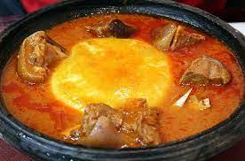
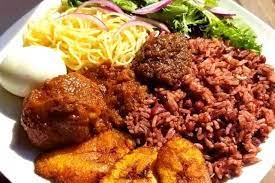
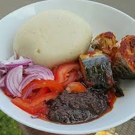

Dish 1: Jollof Rice
Jollof Rice is a flavorful one-pot dish made with rice, tomatoes, onions, and various spices. It's a staple in Ghanaian cuisine and a must-try for visitors.

Dish 2: Fufu with Light Soup
Fufu is a traditional Ghanaian dish made from cassava and plantains. It is often served with light soup, containing fish, meat, or vegetables. Fufu is enjoyed for its unique texture and taste.

Dish 3: Waakye
Waakye is a flavorful dish made with rice and sorghum leaves, giving it a distinct reddish-brown color. It is often served with a variety of sides like fish, eggs, and vegetables.

Dish 4: Jam Bread
Jam Bread is a popular snack in Ghana, enjoyed for breakfast or as a quick bite. It features soft bread spread with delicious local jams, adding a sweet touch to the culinary experience.
